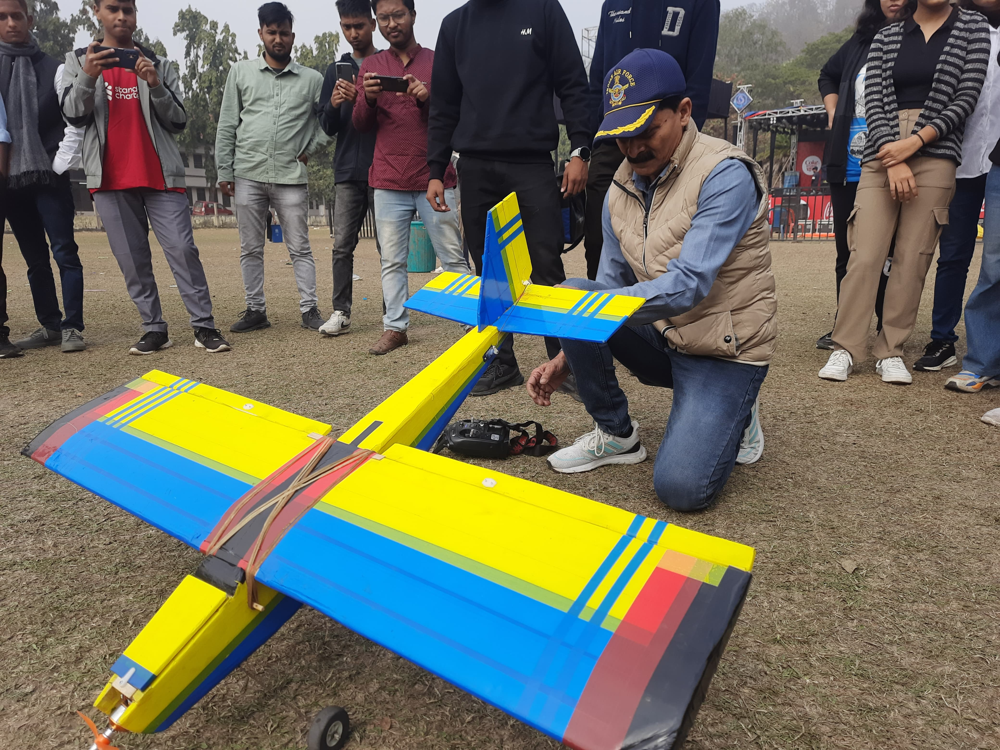
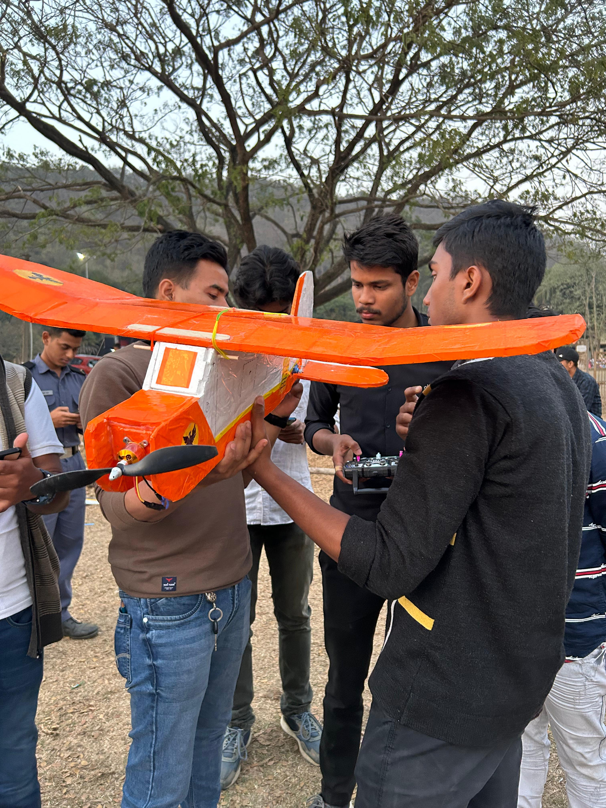
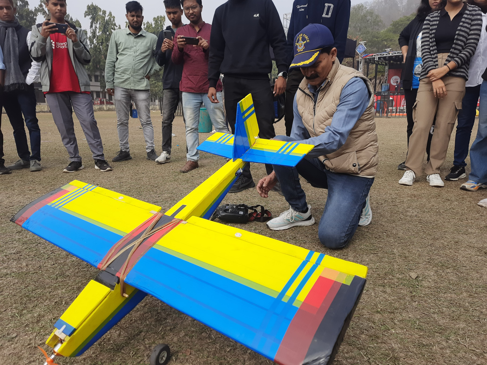
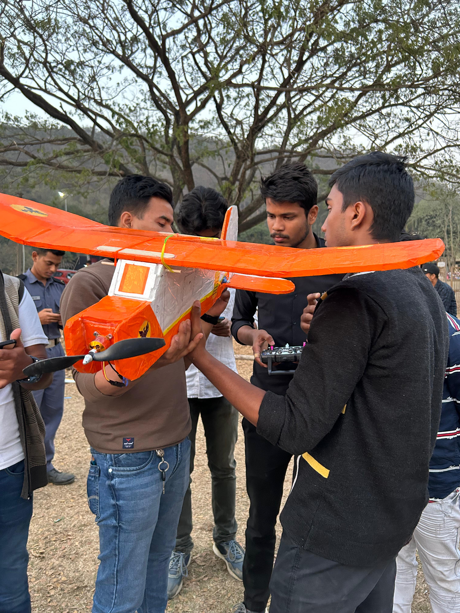

Aerotech
AEROTECH is an exciting and highly anticipated annual flagship event that captivates aviation and technology enthusiasts alike. It stands out by offering a unique blend of education, innovation, and thrilling experiences. The event is designed to inspire and engage participants, showcasing spectacular flight demonstrations featuring RC planes, gliders, and other aerial marvels. These jaw-dropping performances, performed by skilled pilots, leave audiences in awe and offer a glimpse into the future of aviation. One of the key highlights of AEROTECH is the interactive session on drones and geographical mapping. This segment delves into cutting-edge technologies such as unmanned aerial vehicles (UAVs) and their real-world applications. Industry experts provide valuable insights into how drones are revolutionizing sectors like agriculture, surveying, infrastructure inspection, and environmental monitoring, allowing attendees to appreciate the growing importance of these technologies in shaping the future. AEROTECH also hosts an aeromodelling workshop, providing participants with an exciting opportunity to learn the fundamentals of designing and building remote-controlled airplanes. Whether novices or seasoned enthusiasts, attendees are guided by expert instructors through the principles of aerodynamics, materials, and engineering. This hands-on learning experience fosters both creativity and technical skills. The workshop culminates in a competitive showdown, where participants put their creations to the test in an exhilarating contest. This high-stakes competition not only challenges participants to apply their knowledge but also nurtures collaboration and problem-solving. It’s a thrilling way to showcase one’s passion for aeronautics and aerospace engineering. In essence, AEROTECH serves as a platform for aspiring aeronautical enthusiasts to nurture curiosity, build skills, and experience the excitement of innovation. By combining learning with adventure, it continues to inspire future engineers, pilots, and innovators to explore the limitless possibilities in aviation and aerospace.
 


